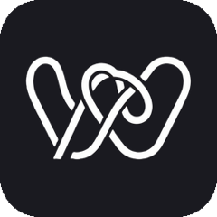

סוכן קוד AI שמדבר איתך בעברית — ישירות בסרגל הצד של VS Code.
כותבים לו מה צריך, והוא קורא את הפרויקט, מחפש בקוד, כותב ומתקן קבצים,
מריץ בדיקות ולינטר, קורא את השגיאות ומתקן אותן — עד שזה עובד.
ל-VS Code 1.85+ · קוד פתוח (MIT) · אפשר להריץ בחינם עם מודל מקומי
WayCode מוצג כפרויקט מוצר: יש לו דף נחיתה, עמוד התקנה ב-Marketplace, קוד פתוח, ותיאור מלא של הבעיה שהוא פותר. במקום להראות רק לוגו, הדף מסביר את זרימת העבודה האמיתית: מבינים משימה, קוראים קוד, עורכים, מריצים בדיקות וחוזרים לתיקון.
הדף מדגיש את היכולת לקרוא קבצים, להציג diff, להריץ פקודות ולהישאר בשליטת המשתמש לפני כל פעולה מסוכנת.
רוב כלי ה-AI לקוד מציעים לך הצעה ועוצרים. WayCode לא עוצר — הוא עורך, מריץ, קורא את השגיאה ומתקן.
כותבים בעברית — הוא מבין ועונה בעברית. הצ'אט מיושר לימין אוטומטית, והקוד נשאר משמאל לימין כמו שצריך.
כל משימה מתחילה מתמונת מצב של עץ הקבצים, קבצי ההגדרות והשפות שזוהו. אין צורך להעתיק לו קבצים.
תצוגת diff לפני כל כתיבה, הפקודה המדויקת לפני כל הרצה, וארבעה מצבי אישור — כולל מצב תכנון שלא נוגע בכלום.
Claude, GPT, מודל מקומי דרך Ollama או מנוי Claude Code שכבר יש לך. בשתי האפשרויות האחרונות — בלי API key.
ארבעה שלבים בלולאה — עד שהקוד באמת עובד.
קורא את הקבצים הרלוונטיים ומחפש בקוד. הוא לא עורך קוד שהוא לא קרא, ולא ממציא קבצים או פונקציות.
יוצר ועורך קבצים, מריץ פקודות בטרמינל. כל שינוי מסוכן עובר דרך תצוגת diff שאתה מאשר.
אחרי כל שינוי הוא מריץ את הבדיקות, הבילד או הלינטר של הפרויקט — ולא מסתפק בלהצהיר שזה עובד.
אם האימות נכשל, הוא קורא את השגיאה, מבין איפה היא, מתקן נקודתית ומריץ שוב — עד שזה עובר.
בוחרים ספק אחד — או שניים, כשמודל אחד מדבר איתך ומודל אחר כותב את הקוד.
ה-API של Anthropic, עם תמיכה מלאה בכלים. דורש API key.
ה-API של OpenAI, וגם כל שרת תואם — LM Studio, Groq, Together או Azure.
מודל שרץ אצלך על המחשב. בלי API key, בלי עלות, והכל נשאר אצלך.
משתמש במנוי Claude שכבר יש לך דרך ה-CLI המותקן — בלי מפתח נוסף.
קוד פתוח, רישיון MIT — אפשר להוריד, לשנות ולבנות מזה משהו משלך.
התקן את WayCode ←